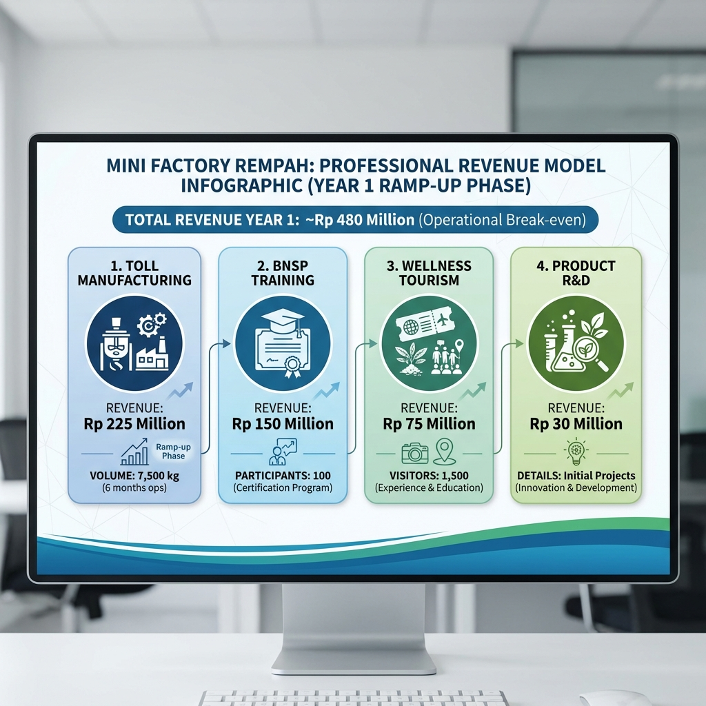

Mini Factory Pengolahan Rempah Solo Technopark Fasilitas Bersama CPOTB untuk Pemberdayakan UMKM Herbal
Pemerintah Kota Surakarta Solo Technopark
Februari 2026
| PERMASALAHAN | SOLUSI |
|---|---|
| 100+ UMKM herbal Solo terhambat di pasar informal | Mini Factory: First shared CPOTB facility di Jawa Tengah |
| ❌ Tidak bisa akses CPOTB → Tidak bisa dapat izin BPOM | ✅4-in-1 Ekosistem: Produksi + Pelatihan + Tourism + R&D |
| ❌ MissingRp 220 triliun peluang pasar | Investasi: Rp 800 Juta (Pemkot Rp 300 Juta + CSR Rp 500 Juta) |
| ❌ Pendapatan terbatas di pasar informal | ✅Kapasitas: 100 UMKM dapat dilayani bergantian |
| ❌ 4.4 juta wisatawan lewat tanpa bisa mengoptimalkan | ✅Wellness Tourism: Destinasi Terintegrasi |
| DAMPAK | KEUNTUNGAN |
|---|---|
| ✅100 UMKM empowered → 30-40% Efisiensi Biaya | 💰ROI: Titik Impas Operasional (Tahun Ops 2027) |
| ✅200+ SDM certified BNSP annually | 💰Pengembalian Modal: ~3 years |
| ✅Solo = Indonesia’s Wellness Manufacturing Hub | 💰Dampak Ekonomi: 200+ Lapangan Kerja & Ekosistem Creation |
| ✅300+ indirect jobs created | 💰Titik Impas: Month 24 |
| ✅Keunggulan Penggerak Pertama di Jawa Tengah | 💰Mandiri by Tahun 2 |
Wonderful Indonesia Wellness 2025 sukses dengan Rp 8.5-9 miliar transaksi UMKM Keunggulan Penggerak Pertama - Belum ada shared CPOTB facility di Jawa Tengah Government support - Kemenperin IKM OT program (Rp 100-140M) tersedia
CAPITALIZE MOMENTUM SEKARANG
Membangun “Mini Factory” bukan sekadar mendirikan bangunan fisik, melainkan membangun fondasi ekosistem industri herbal (Building Farming Ecosystem) yang berkelanjutan di Solo. Tanpa fasilitas ini, ratusan UMKM herbal potensial di Solo akan terus terjebak dalam skala industri rumahan yang informal dan sulit berkembang.
1. Menjembatani Kesenjangan Infrastruktur (Bridging the Gap) Saat ini, terjadi kesenjangan besar antara potensi pasar Rp 220 Triliun dengan kapabilitas produksi UMKM. UMKM memiliki semangat dan resep, namun tidak memiliki akses ke fasilitas produksi standar CPOTB (Cara Pembuatan Obat Tradisional yang Baik) yang mahal.
2. Standarisasi & Keamanan Produk (Quality & Safety) Pasar global dan konsumen modern menuntut jaminan keamanan produk. Mini Factory menjamin bahwa setiap produk herbal yang keluar dari fasilitas ini telah melalui proses yang terkontrol suhunya, terjamin kebersihannya, dan terukur dosisnya. Ini mengubah citra jamu dari “minuman tradisional pinggir jalan” menjadi “produk kesehatan terstandar”.
3. Efisiensi Biaya & Daya Saing (Cost Efficiency) Membangun pabrik sendiri membutuhkan investasi miliaran rupiah yang mustahil bagi UMKM. Dengan konsep Shared Factory (Pabrik Bersama), beban investasi tersebut ditanggung bersama, sehingga biaya produksi per unit turun drastis (efisiensi 30-40%). Ini membuat harga jual produk UMKM Solo lebih kompetitif di pasar nasional.
4. Menciptakan Multiplier Effect Ekonomi Mini Factory ini adalah “mesin” penggerak ekonomi. Dengan beroperasinya pabrik ini:
💡 KESIMPULAN: “Building Farming” di sini bermakna membangun hulu-ke-hilir pertanian herbal yang bernilai tambah tinggi. Mini Factory adalah kunci (key enabler) yang mengubah komoditas mentah menjadi produk bernilai jual tinggi, membawa ekonomi Solo naik kelas.
Masalah yang dihadapi Ibu Siti bukan kasus unik. Riset kami memetakan lanskap fasilitas herbal di Solo Raya dan menemukan kekosongan fasilitas (mata rantai yang hilang) yang masif:
| Fasilitas Existing | Layanan | Gap/Keterbatasan bagi UMKM |
|---|---|---|
| Pabrik Besar (IOT/UKOT) | Produksi massal (Deltomed) | ❌High MOQ (Minimal Order Tinggi), tidak terima maklon kecil |
| Poltekkes Surakarta | Pendidikan D3 Jamu | ❌ Fokus pendidikan, bukan produksi komersial |
| BPVP/BLK Surakarta | Pelatihan barista jamu | ❌ Hanya training, tanpa fasilitas processing |
| Pasar Jamu Nguter | Pasar tradisional | ❌ Pusat perdagangan, bukan fasilitas CPOTB |
| Hortus Medicus | Klinik saintifikasi | ❌ Fokus riset & klinik, bukan maklon produksi |
Bayangkan ekosistem produksi saat ini. Pabrik-pabrik besar ibarat Jet Pribadi: canggih tapi eksklusif. UMKM saat ini terpaksa Jalan Kaki (produksi manual di dapur).
Mini Factory hadir sebagai “Bus Trans Solo”: fasilitas publik yang canggih, aman, dan bisa “dinaiki” siapa saja dengan tiket terjangkau.
Ini adalah FIRST PUBLIC SHARED FACILITY di Jawa Tengah. Solusi ini memecahkan bottleneck terbesar: AKSESIBILITAS.
Solo tidak lagi “berpotensi” menjadi wellness destination—Solo SUDAH MENJADI wellness destination. Data menunjukkan momentum yang luar biasa:
Status Resmi:
Pertumbuhan Eksponensial:
Ekosistem yang Berkembang:
Apa Artinya Angka-Angka Ini untuk Solo dan UMKM?
Bayangkan Solo seperti tambang emas yang sudah ditemukan: 4.4 juta wisatawan datang setiap tahun, pemerintah pusat sudah memberikan status pilot project nasional, dan event Wonderful Indonesia Wellness 2025 membuktikan bahwa UMKM bisa dapat transaksi Rp 8.5-9 miliar hanya dalam beberapa hari. Ini bukan lagi “potensi”—ini adalah realitas yang sedang terjadi sekarang. Namun, ada satu masalah besar: lebih dari 100 UMKM herbal Solo seperti penambang tanpa alat. Mereka melihat peluang emas (4.4 juta potential customers), punya resep tradisional yang bagus, dan semangat kewirausahaan—tetapi tidak bisa mengoptimalkan karena tidak memiliki fasilitas CPOTB untuk mendapatkan izin BPOM. Akibatnya, mereka hanya bisa jual di warung dan pasar tradisional, dengan revenue terhambat di Rp 5-10 juta/bulan, sementara jutaan wisatawan lewat begitu saja.
Mini Factory adalah “alat bersama” yang akan membuka potensi seluruh potensi ini. Dengan akses ke fasilitas CPOTB, UMKM bisa mendapatkan izin BPOM dan naik kelas: dari pedagang informal menjadi entrepreneur bersertifikat, mendapatkan efisiensi biaya produksi 30-40%, dan akses ke pasar nasional. Untuk Pemkot Solo, ini bukan sekadar investasi infrastruktur—ini adalah investasi untuk memastikan Solo deliver hasil sebagai pilot project nasional, meningkatkan pendapatan daerah dari sektor hospitality, dan memperkuat branding Solo sebagai “Indonesia’s Wellness Manufacturing Hub”. Dengan investasi Pemkot Rp 300 juta (untuk Bangunan & Renovasi) dan dukungan CSR Rp 500 juta (untuk Mesin & Peralatan), Solo akan mendapatkan manfaat ekonomi nyata berupa penciptaan lapangan kerja dan ekosistem industri baru—Serta mencapai operational break-even di tahun pertama. Ini adalah win-win-win solution: Pemkot dapat benefit ekonomi makro, UMKM naik kelas, dan wisatawan mendapatkan produk herbal berkualitas tinggi.
💡 INSIGHT KRITIS: Solo memiliki permintaan (4.4 juta visitors), pasokan (100+ UMKM), dan government backing (pilot project status). Yang hilang hanya satu: fasilitas produksi yang memungkinkan UMKM naik kelas. Mini Factory adalah missing piece yang akan membuka potensi seluruh ekosistem ini.
Indonesia bukan hanya “berpotensi” di industri herbal—Indonesia ADALAH pemain utama global:
Ukuran Pasar:
Perilaku Konsumen:
Struktur Industri:
Apa Artinya Pasar Rp 220 Triliun Ini untuk UMKM Solo?
Bayangkan ada kue raksasa senilai Rp 220 triliun di atas meja, dan 6 dari 10 orang Indonesia (59.6%) sudah suka makan kue ini (konsumsi jamu/herbal). Di Jawa, angkanya lebih tinggi lagi: 7 dari 10 orang (72%) adalah konsumen aktif. Ini bukan pasar kecil atau niche—ini adalah pasar mainstream yang tumbuh 7.1% per tahun dan akan jadi 2x lipat lebih besar dalam 9 tahun ke depan. Yang menarik, 87% dari industri ini dikuasai oleh UMKM, bukan perusahaan besar seperti Sido Muncul atau Deltomed. Artinya, ini adalah industri yang memang cocok untuk UMKM—bukan arena untuk korporasi raksasa.
Tapi ada masalah besar: Mayoritas UMKM hanya bisa “gigit pinggiran kue” karena mereka terhambat di pasar informal (warung, pasar tradisional). Mereka tidak bisa akses bagian tengah kue yang paling besar—minimarket, apotek, e-commerce, hotel, dan 4.4 juta wisatawan Solo—karena tidak punya izin BPOM. Mini Factory adalah “pisau” yang akan kasih UMKM Solo akses ke bagian tengah kue Rp 220 triliun ini. Dengan fasilitas CPOTB, mereka bisa dapat izin BPOM, masuk ke pasar formal, dan meng-capture share signifikan dari pasar raksasa ini. Ini bukan tentang “menciptakan pasar baru”—pasar sudah ada, permintaan sudah ada, konsumen sudah ada. Yang dibutuhkan hanya akses ke fasilitas produksi yang proper.
💡 INSIGHT KRITIS: Pasar Rp 220 triliun didominasi oleh UMKM (87%), tetapi mayoritas UMKM terhambat di tahap informal karena tidak bisa akses CPOTB. Dengan Mini Factory, Solo dapat meng-capture share signifikan dari pasar ini.
Mini Factory ini BUKAN ide yang berdiri sendiri—ini adalah eksekusi sempurna dari berbagai program pemerintah yang sudah berjalan:
Alignment dengan Pemerintah Pusat:
Alignment dengan Pemkot Surakarta:
Alignment dengan SDGs (Sustainable Development Goals—Tujuan Pembangunan Berkelanjutan PBB):
💡 INSIGHT KRITIS: Dengan struktur pendanaan sinergis (Pemkot Rp 300 Juta + CSR Rp 500 Juta), investasi terbagi secara beban yang wajar. Primary Funding: Pemkot Rp 300 Juta + CSR Rp 500 Juta = Rp 800 Juta (100% cash)
Mini Factory bukan sekadar “pabrik”—ini adalah ekosistem terintegrasi yang menggabungkan 4 fungsi dalam satu fasilitas:
Fasilitas produksi bersama yang memungkinkan UMKM memproduksi dengan standar CPOTB tanpa harus investasikan ratusan juta sendiri.
Kapasitas:
Equipment CPOTB-compliant:
Catatan: QC = Quality Control (Kontrol Kualitas), SS304 = Stainless Steel food-grade (baja tahan karat untuk makanan/obat)
Pusat pelatihan SDM yang menghasilkan tenaga kerja tersertifikasi untuk industri herbal.
Program Sertifikasi:
Target:

Destinasi wisata edukatif yang memperkuat positioning Solo sebagai wellness hub.
Attractions:
Target:
Pusat inovasi yang membantu UMKM develop produk baru dengan dukungan UNS.
Layanan:
Partnership:
Konsep Arsitektur & Lanskap:

Konsep Landscaping & Elemen Garden:
Fungsi Ganda:

Zona Produksi CPOTB-Compliant:
Standar CPOTB:
Zoning Efisien (300m² total):
Bahan Baku → Pencucian → Pengeringan → Grinding → Mixing → Packaging (sachet)
Bahan Baku → Pencucian → Pengeringan → Grinding → Extraction → Capsule Filling → Packaging (botol)
Bahan Baku → Pencucian → Extraction → Concentration → Bottling → Packaging
Semua jalur bermuara pada: Produk Bersertifikat BPOM ✅
Sebelum Mini Factory:
Setelah Mini Factory:
Impact Multiplier:
Direct Jobs (15 positions):
Indirect Jobs (300+ positions):
Skills Development:
Catatan: SDM = Sumber Daya Manusia (tenaga kerja terlatih)
Indirect PAD (Pendapatan Asli Daerah) Contribution:
(Pendapatan langsung dikelola penyelenggara, Pemkot mendapat manfaat dari pajak tidak langsung dan multiplier effect)
Total Economic Impact (Tahun Ops 2027):
Positioning Strategis:
Differentiation:
National & International Recognition:
Kami berkomitmen pada transparency dan accountability. Berikut adalah framework komprehensif untuk mengukur dan memonitor kesuksesan Mini Factory:
Tahun 2026 difokuskan sepenuhnya pada pembangunan fisik dan infrastruktur non-fisik (kemitraan & SDM). Operasional komersial penuh dimulai tahun 2027.
| Quarter | Track Fisik (Konstruksi) | Track Non-Fisik (Persiapan Operasi) | Target Output |
|---|---|---|---|
| Q1 2026 | DED &
Perizinan (Finalisasi desain, Tender) |
Stakeholder
Engagement (MoU Pemkot, BPOM, Mitra CSR) |
Izin Prinsip, Komitmen Mitra |
| Q2 2026 | Tender & Persiapan
Lahan (Pemenang tender, Cleaning) |
Rekrutmen Tim
Inti (Facility Manager, QC Lead) |
Kontraktor Terpilih, Core Team |
| Q3 2026 | Konstruksi
Struktur (Pondasi, Dinding, Atap) |
Kurasi & MoU
UMKM (Seleksi 30 UMKM Early Bird) |
Bangunan Berdiri, Kontrak UMKM |
| Q4 2026 | Finishing & Instalasi
Mesin (Epoxy, HVAC, Equipment) |
Bimbingan Teknis
Pra-Operasi (SOP Produksi & Pelatihan Admin) |
Fasilitas Siap, SDM Siap |
Catatan: Revenue komersial diproyeksikan mulai masuk pada Tahun Operasional 1 (2027).
1. UMKM Empowerment Metrics:
| KPI | Target Tahun 1 (Ops 2027) | Target Tahun 2 (Ops 2028) | Measurement |
|---|---|---|---|
| Number of UMKM using facility | 50 Mitra Aktif | 100 Mitra Aktif | Kontrak Aktif |
| BPOM licenses obtained | 25 New Licenses | 50 New Licenses | BPOM database |
| UMKM Efficiency & Margin | 30-40% Pengurangan Biaya | 50% Pengurangan Biaya | Production cost analysis |
| New UMKM jobs created | 100 Jobs | 200 Jobs | Employment survey |
2. Financial Sustainability Metrics:
| KPI | Target Tahun 1 (Ops 2027) (End) | Target Tahun 2 (Ops 2028) (End) | Measurement |
|---|---|---|---|
| Monthly revenue run-rate | Rp 50M/month | Rp 85M/month | Financial statements |
| Operating margin | Break-even Operasional | > 15-20% | Rasio Laba/Pendapatan |
| Pendapatan per UMKM | Rp 5M/year | Rp 8M/year | Pendapatan/UMKM Aktif |
| Break-even status | Month 30-36 | Profitable | Cumulative cash flow |
3. Training & Certification Metrics:
| KPI | Target Tahun 1 (Ops 2027) | Target Tahun 2 (Ops 2028) | Measurement |
|---|---|---|---|
| BNSP certificates issued | 100 | 200 | Certificate database |
| Employment rate of graduates | > 75% | > 80% | 3-month follow-up survey |
| Repeat training customers | > 30% | > 40% | Registration records |
4. Tourism Impact Metrics:
| KPI | Target Tahun 1 (Ops 2027) | Target Tahun 2 (Ops 2028) | Measurement |
|---|---|---|---|
| Visitor count | 1,500 Visitors | 3,000 Visitors | Ticketing system |
| Pendapatan per visitor (Ticket+F&B) | Rp 75.000 | Rp 100.000 | Sales data (In-house) |
| Visitor satisfaction score | > 4.5/5 | > 4.7/5 | Exit survey |
| Social media engagement | 5k followers | 15k followers | Instagram/Facebook analytics |
Data Collection Methods:
Untuk memberikan gambaran holistik bagaimana Mini Factory menciptakan, mengirimkan, dan menangkap nilai, berikut adalah 9 Blok Model Bisnis kami:


Total Pendapatan (Ops 2027): Rp 480 juta (Ramp-up Phase) Total Laba Bersih (Ops 2027): (Break-even / Laba Kecil) Focus: Operational Stability & Market Penetration (Pertumbuhan Laba in Tahun Ops 2028)
📌 DISCLAIMER - FINANCIAL PROJECTIONS:Semua angka revenue, profit, dan ROI di atas adalah PROYEKSI berdasarkan assumptions konservatif, BUKAN data historical atau guaranteed returns. Actual results akan tergantung pada:
- UMKM adoption rate (target: 100 UMKM)
- Training participant volume (target: 200/year)
- Tourism visitor count (target: 1,500/year)
- Market conditions dan competitive landscape
Lihat Sensitivity Analysis di bagian Risk Mitigation untuk best/base/worst case scenarios.
Kenapa Model Bisnis Ini Sustainable (Berkelanjutan)?
Bayangkan Mini Factory seperti “co-working space” untuk produksi jamu—bukan kantor, tapi fasilitas produksi yang bisa disewa per kilogram. UMKM tidak perlu investasikan ratusan juta untuk bangun pabrik sendiri; mereka cukup bayar Rp 30,000/kg untuk produksi di fasilitas CPOTB kita (jauh lebih murah dari market rate Rp 40-80k/kg). Ini adalah “Toll Manufacturing” (pabrik sewaan), yang menjadi backbone revenue di fase awal. Tapi Mini Factory tidak cuma mengandalkan satu sumber income—ada 4 pilar revenue yang saling menguatkan: (1) Toll Manufacturing (Rp 225M), (2) Training BNSP (Rp 150M—100 orang), (3) Wellness Tourism (Rp 75M—1,500 wisatawan), dan (4) R&D services (Rp 30M). Total: Rp 480 juta revenue dengan status Break-even Operasional di tahun pertama (Ramp-up Phase).
Yang paling penting: model ini self-sustaining (tidak perlu subsidi terus-menerus). Setelah tahun pertama (fase ramp-up), Mini Factory akan mencapai stabilitas operasional. Di tahun ke-2, kami menargetkan profitabilitas yang sehat untuk reinvestasi upgrade equipment (misalnya, beli mesin kapsul filling atau ekstraksi herbal). Target Break-even Operasional di tahun pertama menunjukkan manajemen kas yang disiplin. Setelah itu, semua profit bisa masuk ke kas daerah atau di-reinvestasikan untuk ekspansi. Ini bukan “proyek charity” yang butuh subsidi selamanya—ini adalah bisnis yang profitable dan sustainable, sambil tetap memberdayakan UMKM. Win-win untuk semua!
| Item | Tahun Ops 2027 (Ramp-up) | Tahun Ops 2028 (Growth) | Tahun Ops 2029 (Scale-up) |
|---|---|---|---|
| REVENUE | |||
| Toll Manufacturing | 225 juta | 720 juta | 1,080 juta |
| BNSP Training | 150 juta | 480 juta | 600 juta |
| Wellness Tourism | 75 juta | 300 juta | 450 juta |
| Product Development | 30 juta | 100 juta | 150 juta |
| Total Pendapatan | 480 juta | 1,600 juta | 2,280 juta |
| EXPENSES | |||
| Operational Costs | 250 juta | 700 juta | 950 juta |
| Staff Salaries | 180 juta | 240 juta | 300 juta |
| Utilities & Maintenance | 50 juta | 60 juta | 80 juta |
| Total Expenses | 480 juta | 1,000 juta | 1,330 juta |
| NET PROFIT | 0 (Break-even) | 600 juta | 950 juta |
| ROI (Annual) | 0% | 120% | 190% |
| Payback Period | - | 1.8 tahun | - |
Catatan: Semua proyeksi di atas adalah CONSERVATIVE ESTIMATES berdasarkan assumptions yang realistis. Skenario optimistis (dengan marketing agresif & partnership kuat) dapat mencapai Rp 1.2-1.5 miliar Tahun 1. Lihat Sensitivity Analysis di bagian Risk Mitigation untuk detail best/base/worst case scenarios.
Kami tidak hanya optimis—kami realistis. Berikut adalah analisis komprehensif terhadap berbagai skenario dan strategi mitigasi risiko:
| Metric | Best Case (Optimis) | Base Case (Realistis) | Worst Case (Pesimis) |
|---|---|---|---|
| UMKM Adoption | 75 UMKM | 50 Aktif UMKM | 30 UMKM |
| Toll Mfg Pendapatan | Rp 350M | Rp 225M | Rp 135M |
| Training Participants | 150/year | 100/year | 50/year |
| Training Pendapatan | Rp 225M | Rp 150M | Rp 75M |
| Tourism Visitors | 2,500 | 1,500 | 800 |
| Tourism Pendapatan | Rp 125M | Rp 75M | Rp 40M |
| R&D Pendapatan | Rp 50M | Rp 30M | Rp 15M |
| TOTAL REVENUE Y1 | Rp 750 Juta | Rp 480 Juta | Rp 265 Juta |
| NET PROFIT Y1 | Rp 150 Juta | Break-even | (Loss Rp 100 Juta) |
| Break-even | 18 months | Tahun 1 (Ops) | Tahun 2 (Ops) |
| ROI Tahun 1 | Positive | 0% (Services) | Negative |
Kesimpulan: Dengan skenario Base Case, Mini Factory mencapai Break-even Operasional di tahun pertama Operasi (2027). Fokus tahun pertama adalah Market Penetration dan Operational Stability, bukan profit maksimal. Labaabilitas signifikan ditargetkan mulai Tahun Ops 2028.
1. RISK: Low UMKM Adoption (< 60 UMKM)
Likelihood: LOW (15%) Impact: MEDIUM (revenue turun 30-40%)
Mitigation:
2. RISK: Regulatory Delays (CPOTB Certification > 12 bulan)
Likelihood: MEDIUM (30%) Impact: HIGH (delay revenue 6-12 bulan)
Mitigation:
3. RISK: Equipment Breakdown atau Maintenance Issues
Likelihood: MEDIUM (25%) Impact: MEDIUM (production downtime 1-2 minggu)
Mitigation:
4. RISK: CSR Funding Tidak Terealisasi (< Rp 200M)
Likelihood: MEDIUM (35%) Impact: MEDIUM (harus scale down Phase 1)
Mitigation:
5. RISK: Future Competition dari Kota Lain
Likelihood: MEDIUM (40% dalam 2-3 tahun) Impact: LOW (market Jawa Tengah cukup besar untuk 2-3 players)
Mitigation:
| Contingency Item | Anggaran Allocated |
|---|---|
| Regulatory delays (consultant, legal) | Rp 20 juta |
| Equipment emergency repair | Rp 15 juta |
| Marketing boost (if adoption slow) | Rp 10 juta |
| Operational buffer | Rp 5 juta |
| TOTAL CONTINGENCY | Rp 50 juta (Buffer Operasional) |
💡 INSIGHT KRITIS: Kami sudah think through semua risks dan punya concrete mitigation plan untuk setiap scenario. Bahkan dalam worst case (60 UMKM, delay 6 bulan, CSR parsial), Mini Factory tetap viable. Ini bukan “blind optimism”—ini adalah calculated risk dengan downside protection.
| Komponen | Detail | Nilai (Rp) |
|---|---|---|
| 1. Pembangunan Gudang & Renovasi | (Didanai Pemkot Surakarta) | 300,000,000 |
| - Konstruksi bangunan & Renovasi | Standar CPOTB | 200,000,000 |
| - Utilitas & Sarana Penunjang | HVAC, Air, Listrik | 100,000,000 |
| 2. Pengadaan Mesin & Peralatan | (Didanai CSR Perusahaan) | 500,000,000 |
| - Mesin Process (Grinding, Extracting) | Kapasitas produksi medium | 300,000,000 |
| - Mesin Filling & Packaging | Sachet & Capsule | 100,000,000 |
| - Peralatan Lab QC | Mikroskop, Alat Uji | 100,000,000 |
| TOTAL INVESTASI | 800,000,000 |
| Sumber | Nilai (Rp) | Keterangan |
|---|---|---|
| Pemkot Surakarta | 300,000,000 | Pembangunan Gudang / Renovasi |
| CSR Perusahaan | 500,000,000 | Pengadaan Mesin & Peralatan |
| TOTAL | 800,000,000 | 100% |
Status: Aktif discussion dengan beberapa potential mitra strategis.
Kategori: Perusahaan Jamu & Farmasi Besar Potential Contribution: - Mesin & Peralatan Utama (Processing, Grinding, Extraction) - Nilai: ~Rp 300-400 Juta
Kategori: BUMN / Private Sector Potential Contribution: - Peralatan Lab & Penunjang - Nilai: ~Rp 100-200 Juta
Rationale: Program ini sejalan dengan mandat CSR untuk pemberdayaan UMKM dan local content (TKDN). Dengan branding “Solo Wellness City”, partisipasi CSR memberikan PR value yang tinggi.
Total CSR Target: Rp 500 juta (Full Equipment Support)
Rationale for CSR Participation:
💡 CATATAN: CSR contributions dapat berupa cash (preferred) atau in-kind (equipment donation). MoU framework sudah disiapkan untuk formalisasi commitment.
Kolaborasi:
MoU Status: Ready to sign (draft sudah dipersiapkan)
| Risk | Probability | Impact | Mitigation Strategy |
|---|---|---|---|
| CPOTB certification delay | Medium | High | - Apply denah 3 months early <br>- Hire CPOTB
consultant <br>- Phased certification (CPOTB
Bertahap) |
| Funding shortfall | Low | High | -100% Cash Secured (Pemkot + CSR
commitments)<br>- Zero dependency on
uncertain grants <br>- Scalable phases (bisa jalan
dengan operational minimum) |
| UMKM adoption slower than expected | Low | Medium | - Pre-launch socialization with PARESO <br>-
Subsidized pricing Tahun 1 <br>- Free trial
production for first 10 UMKM |
| Equipment procurement delay | Medium | Medium | - Order equipment during construction <br>- Local
suppliers (Gama Mesin, PT Margamas)<br>- Backup
suppliers identified |
| Competition from other cities | Low | Low | - First mover advantage <br>- Strong UMKM
relationships <br>- Unique 4-in-1 model |
| Regulatory changes | Low | Medium | - Close coordination with BPOM <br>- Flexible
facility design <br>- Regular compliance audits |
Overall Risk Level: LOW-MEDIUM (well-mitigated)
Kami memohon dukungan Pemkot Surakarta untuk 3 hal strategis:
Dengan langkah ini, Solo akan mendapatkan: 🏆 Fasilitas CPOTB Pertama di Jateng 💰 200+ Lapangan Kerja Baru 🚀 Status “Wellness Manufacturing Hub” Nasional
Mari bersama-sama mewujudkan Solo sebagai pusat wellness tourism DAN wellness manufacturing Indonesia yang berkelanjutan!
Nama: Yerma Jabatan: Ketua Tim Email: yermaning9@gmail.com Telp: 082133904353
Penasehat Tehnis: - ToraJava Art Foundation - UNS (Universitas Sebelas Maret) - Pemkot Surakarta - Solo Technopark
Terima kasih atas perhatian Bapak/Ibu.
Kami siap untuk mempresentasikan proposal ini secara detail dan menjawab semua pertanyaan.
Mari bersama-sama mewujudkan Solo sebagai Indonesia’s Wellness Manufacturing Hub!
Semua data dalam proposal ini dapat diverifikasi melalui URL berikut:
Market Size USD 13.7 Miliar:
BPOM Data - Jamu Industry:
Konsumsi Jamu 59.6% Populasi:
Industri OT - 87% UMKM:
4.4 Juta Pengunjung 2024:
Pilot Project Nasional:
Wonderful Indonesia Wellness 2025:
PAD Pariwisata Rp 60.837 Miliar:
Kemenperin IKM Program:
Solo Technopark:
BPOM SIPEMANDU:
BPUM Solo (Dinkop UKM):
Kemenkop LPDB:
PT Sido Muncul - PROAKTIF:
PT Deltomed Laboratories:
Verified Supplier Quotes:
BMD Training Centre - CPOTB Training Pricing:
BNSP Official:
LSP Certified Herbalist:
Global Wellness Institute:
Indonesia Wellness Economy #1 SEA:
Asia-Pacific Wellness Tourism:
BPS (Badan Pusat Statistik):
Bank Indonesia:
Balai Besar POM Semarang:
UNS (Universitas Sebelas Maret):
Jurnal Ilmiah:
Custom Market Insights:
Euromonitor International:
Grand View Research:
| Istilah | Kepanjangan | Penjelasan Sederhana |
|---|---|---|
| CPOTB | Cara Pembuatan Obat Tradisional yang Baik | Standar kebersihan dan kualitas produksi yang diwajibkan pemerintah untuk produk jamu/herbal agar bisa dapat izin edar BPOM |
| UMKM | Usaha Mikro Kecil Menengah | Pengusaha kecil seperti produsen jamu rumahan, warung herbal, dll |
| BPOM | Badan Pengawas Obat dan Makanan | Lembaga pemerintah yang mengawasi keamanan obat, makanan, dan produk kesehatan |
| BNSP | Badan Nasional Sertifikasi Profesi | Lembaga yang mengeluarkan sertifikat kompetensi untuk tenaga kerja terlatih |
| OT | Obat Tradisional | Jamu, herbal, dan produk kesehatan alami Indonesia |
| QC | Quality Control | Kontrol kualitas—pengujian untuk memastikan produk aman dan berkualitas |
| R&D | Research & Development | Riset dan pengembangan produk baru |
| ROI | Return on Investment | Pengembalian investasi—berapa persen keuntungan dari modal yang ditanam |
| CAGR | Compound Annual Growth Rate | Tingkat pertumbuhan rata-rata per tahun |
| PAD | Pendapatan Asli Daerah | Pendapatan pemerintah kota dari retribusi, usaha daerah, dll |
| SDG | Sustainable Development Goals | Tujuan Pembangunan Berkelanjutan PBB |
| SDM | Sumber Daya Manusia | Tenaga kerja terlatih |